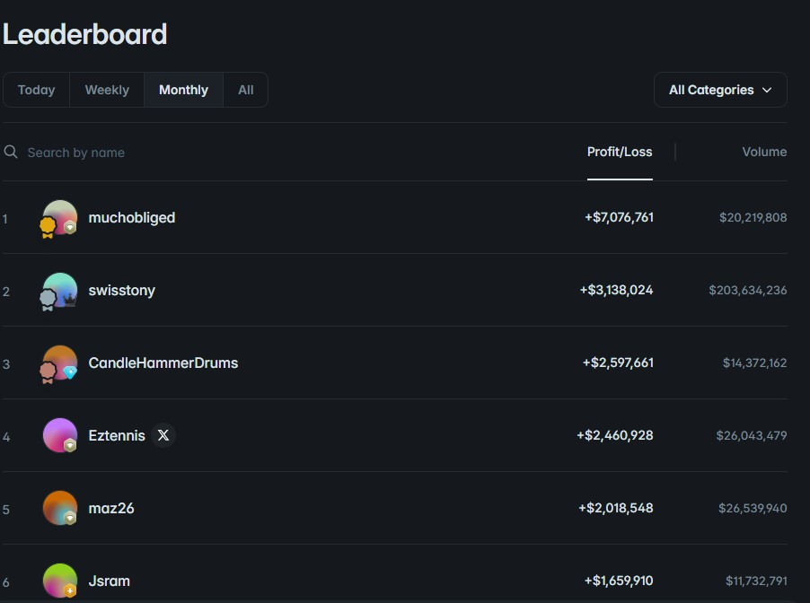

How Polymarket Whales Actually Make Money (It's Not Predictions)

Look at the leaderboard on any of Polymarket's fast-moving crypto markets and you'll see the same handful of wallets near the top, month after month — some of them clearing six figures on markets that resolve every five minutes. The natural assumption is that these traders are just better at guessing which way the price will move. After digging into how several of these wallets actually trade, on-chain, trade by trade, the real answer turns out to be almost the opposite: the biggest winners aren't guessing at all. They've found a completely different way to make money from the same markets, one that barely depends on being right about direction.
The two buttons that change the whole game
To understand how this works, you need to know about two things Polymarket lets anyone do: split and merge.
Splitting means putting in $1 and instantly getting back one "Up" share and one "Down" share. It costs nothing beyond a small network fee, and it always works — you don't need anyone to trade with. One of those two shares is guaranteed to be worth a dollar when the market resolves; the other will be worth nothing.
Merging is the reverse. Hand back one Up share and one Down share together, and you instantly get your dollar back — no need to wait for the market to resolve.
On their own, these are just plumbing. But they open the door to a move that has nothing to do with predicting anything.
The actual trick: manufacture the product, then sell it for slightly more
Here's the play. A whale splits $1 into an Up share and a Down share, exactly like anyone can. Then, instead of holding either one and hoping, they place sell orders for both — say, Up for 52 cents and Down for 50 cents. If both orders fill, they've just sold something that cost them a dollar for a dollar and two cents. It doesn't matter which side eventually wins. They already have their money.
Do that over and over, across dozens of markets, all day, and those two-cent margins turn into real money — not because of a good read on crypto prices, but because they're effectively running a small currency exchange booth, buying at one price and selling at a slightly better one, thousands of times a day.
There's a mirror version of the same idea: when panic in a fast-moving market pushes the Up price and the Down price to add up to less than a dollar, a whale can buy both, merge them, and pocket the difference instantly. Same logic, opposite direction — profiting from a temporary imbalance rather than from a forecast.
Why you can't just copy this move
This is the part that trips people up, because the strategy sounds simple enough to try yourself. The catch is a subtle but brutal effect called adverse selection, and it explains why resting orders don't behave the way you'd hope.
When you place a passive order — a standing offer to buy or sell at a set price — you don't control when it gets filled. The market does. And the market only fills your order when it's a good deal for whoever is on the other side of it, which means a bad deal for you. If you're offering to sell "Up" at 52 cents, that order only gets taken when Up is actually becoming less likely to win — because that's the only situation where someone rational would buy it from you at that price. If Up is genuinely about to win, nobody sells it to you and nobody buys your offer to sell it; your order just sits there.
Now stretch that across the two-sided play above. A whale sells Up and Down at once, hoping both orders fill together for that clean two-cent profit. In reality, the market moves in between the two fills. If the price ticks up, the Up order gets snapped up immediately — because it's suddenly a good deal for the buyer — while the Down order just sits, unfilled, because nobody wants to buy a losing position at that price anymore. The whale is left holding the wrong half: they sold the side that was about to win, and they're stuck with the side that's about to lose. To get out clean, they either need another Up share to merge against, or they have to dump the Down share as a rushed, fee-paying trade — which eats the profit they were trying to capture in the first place.
This is exactly why the "risk-free 2%" isn't something you can just quietly farm at $50 a trade. Doing it properly means having the inventory and the speed to fix the mismatch in milliseconds, every single time it happens — which is an infrastructure problem, not a trading idea.
Getting paid just for showing up
There's a third piece that most people never think about: Polymarket runs a liquidity rewards program that pays traders simply for keeping buy and sell orders sitting near the current price, regardless of whether those specific orders end up winning or losing. The tighter your pricing and the more size you're offering, the bigger your share of a daily reward pool that exists purely to keep the market well-stocked with orders for everyone else to trade against.
For someone quoting both sides of thousands of markets all day, this turns into a steady paycheck that has nothing to do with getting any individual bet right. It arrives on top of everything else — the small profit from selling both sides slightly above a dollar, and the fact that resting orders don't pay the trading fee that active, on-demand orders do.
Three income streams, zero predictions
Put it together and the picture looks nothing like what most people imagine when they picture a "whale." They're not making a directional call and getting it right more often than everyone else. They're collecting a small spread every time they successfully sell both sides of a split, they're avoiding the fee that regular traders pay, and they're earning a reward just for keeping their orders on the book. None of that requires the price to go up or down in any particular direction — it just requires enough volume, enough speed, and enough capital to run all day without getting caught holding the wrong side too often.
That last part matters, because these wallets do lose plenty of individual bets — sizable ones, regularly. It doesn't hurt them the way it would hurt a normal trader, because those losses are just the cost of doing business at scale, offset many times over by the spread and the rewards. Their profit curve trends steadily upward not because they're right more than they're wrong, but because they've built a setup where being wrong on any single bet barely matters.
Same market, opposite sign
This is really the whole story in one sentence: an everyday trader pays a fee to place a bet and hopes to guess correctly. A whale running this setup pays no fee, earns a small spread on both sides regardless of the outcome, and gets paid extra just for being present. It's not a better version of the same strategy — it's a different business sitting on the other side of the same market. One side is the gambler. The other side is the house.
None of this is secret or against the rules — it's all visible on-chain if you know where to look, and Polymarket has reportedly opened its rewards program up more broadly, meaning the opportunity to farm it isn't limited to a closed group. But it isn't something you back into by getting better at predicting Up or Down. It's a different game, one that needs capital, speed, and constant presence rather than a sharper read on where the price is headed next.
What this means if you're trading normally
If you take one thing from how these wallets operate, it's this: when you're buying a side outright, you're not just betting against the market's estimate of the odds — you're also on the other side of a system that's specifically built to extract a small toll from that exact kind of trade. That doesn't mean directional trading is pointless. It means it's worth being honest about which game you're actually playing, and not mistaking a leaderboard full of spread-and-rebate operations for proof that someone out there has cracked the code on predicting five-minute crypto moves.
Disclaimer: This post describes publicly observable on-chain trading patterns and is for educational purposes only. It is not financial advice, and it is not a recommendation to attempt liquidity provision or split/merge strategies, which carry their own risks including execution risk and capital requirements. Always do your own research and only risk what you can afford to lose.